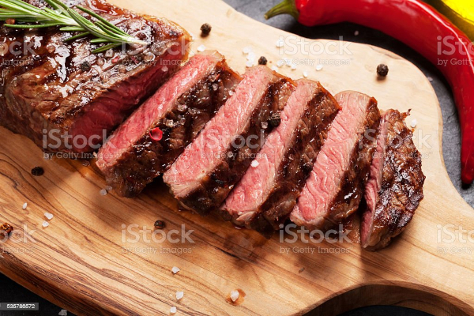

Bife Grelhado na Frigideira
Menu de Receitas

Descrição
Preparo de bife grelhado diretamente na frigideira.
Ingredientes
- 01 fatia - espessura de aproxidamente 1,5 cm - de carne com bastante marmoreio - preferencialmente contra-filé;
- 01 dente de alho;
- 01 ramo de alecrim;
- 01 colher de manteiga;
- Sal e Pimenta do reino;
Modo de Preparo
- Aqueça a frigideira em fogo alto. Frigideiras mais finas: aproximadamente 3 minutos; Frigideiras mais grossas: aproximadamente 5 minutos.
- Adicione um pouco de azeite - ou um pouco de manteiga - e imediatamente coloque a carne. Evite tocar ou movimentar a carne na frigideira.
- Quando as laterais indicarem que mais da metade do bife já está grelhado, vire o bife.
- Neste momento, acrescente ao lado da carne a manteiga, o dente de alho e o ramo de alecrim.Regue as poucos a carne com a manteiga derretida.
- Após grelhar deste lado, se o bife possuir uma capa de gordura, deixe este lado da gordura em contato com a frigideira por alguns minutos.
- Depois de retirar o bife da frigideira, deixe-o descansar por 1 minuto. Após esse tempo, corte-o e adicione sal e pimenta do reino a gosto.
Menu de Receitas